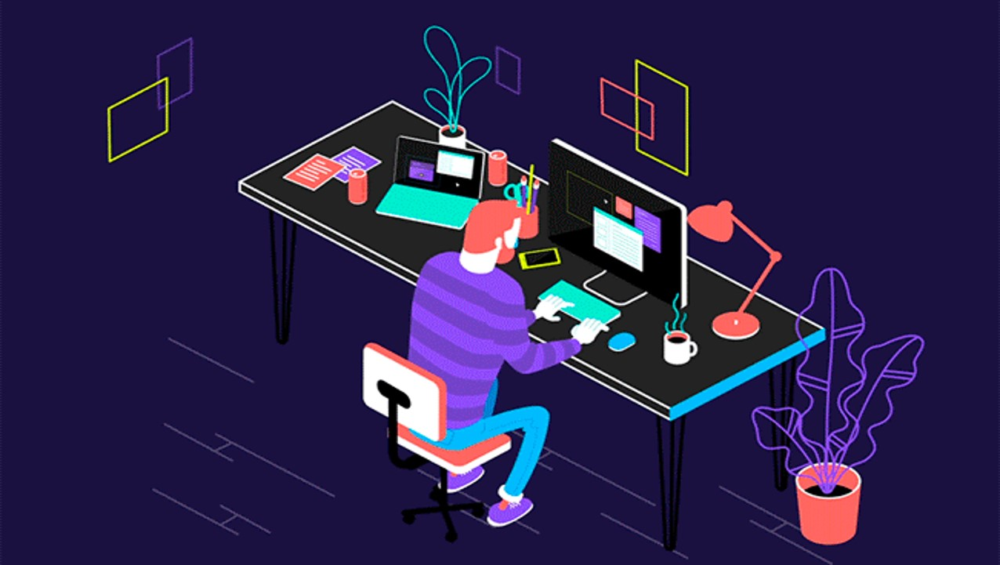
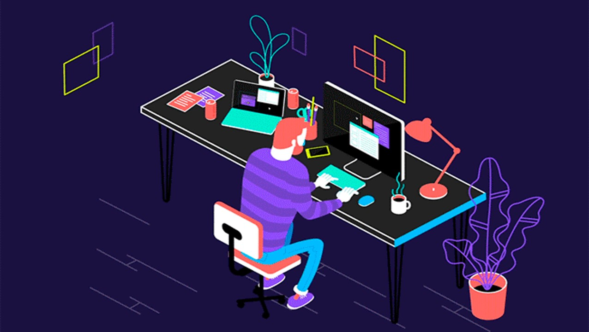

Mi plan de vida esta basado en poder terminar mis estudios y que estos me lleven al área laboral la cual anhelo disfrutar, esta área laboral se basa en las tecnologías y todo lo relacionado a ellas, planeo tener un trabajo estable que me de suficientes beneficios como para poder tener inversiones las cuales puedan darme seguridad mental y económica sobre mi vida. Durante esto, estaré preparándome para vivir en un lugar agradable y pleno, poder cocinar a mi gusto y disfrutar lo lindo de la vida, todo esto lo estaré haciendo durante toda mi vida hasta poder perfeccionarlo y poder, hacer una huella en el mundo.
¿quien soy?
Mi nombre es Andry Domínguez Soto, nací en Santo Domingo el día primero del mes de mayo del 2003 y soy una persona algo extrovertida y introvertida a la vez, un poco sentimental, amable, comprensible, lo mas honesta que se puede, algo caritativa y poco orgullosa, no me gusta resaltar en la mayoría de las cosas, me encanta la música electro, pop, kpop, etc… me encanta programar y poder conocer cada día la tecnología y los beneficios que da en todas las formas posibles dentro de ella.
Tengo debilidades tales como la inseguridad, el distraerme fácilmente en temas que aunque sean importantes o no debo atender y el a veces tener limites en cuanto a cosas económicas. Si quisiera decir cosas buenas de mi dijera que la responsabilidad y el ayudar a cualquier persona en necesidad que me pida ayuda, el pensamiento constante de trabajo y las grandes ganas que puedo tener en el ámbito laboral (amo trabajar y ganar para poder progresar) odio tener deudas y lastimar las personas.
5 cosas que me hacen feliz.
La tecnología.
Videos de mis idolos, youtubers, etc..
Ver a mi hermanita
Jugar video Juegos y pasar el rato con amigos
Hacer ejercicios y salir a viajar por cualquier parte, tanto solo como acompañado
5 cosas que me hacen enojar
Las criticas no constructivas.
La negatividad sin proposíto.
Que me obliguen y que quieran manipular cualquier decision en mi vida.
Los limites puestos innecesariamente.
Que me traten feo sin razon alguna >:V
¿Que me hace unico?
Diría que algo que me hace único es el carisma y lo bueno que puedo ser con una persona en caso de que sea en el ámbito sentimental, en cuanto al laboral es el gran entusiasmo que le puedo tener a un trabajo el cual me guste, soy muy intuitivo y animado cuando es algo en lo que puedo ser bueno, otra cosa que me hace ser único es el poder tener una clara visión de lo que quiero ser y una fuerte fuerza de voluntad para algo que quiero.
Test de la Personalidad.
Test de las multiples inteligencias.
¿Por qué decidi hacer este curso?

Oooohhh que te cuento XD, ¡¡¡AMO LA TECNOLOGIA!!!, técnicamente siempre he querido ser un programador, diseñador y creador de paginas web, aplicaciones tanto móviles como de escritorio, software y demás sistemas y temas relacionados a la tecnología. todo en cuanto al poder digitar y crear innovaciones que puedan dar un uso útil a la vida, además que adoro la robótica y, aunque suene de fantasía, poder crear equipajes, armamentos, facilitadores, extensiones y ayudas que puedan favorecer al humano y darle una perspectiva diferente de la vida, una sorpresa, una nueva experiencia, y por eso decidí tomar este curso, digamos que este es como mi primer paso.
Metas a corto, largo y mediano plazo
Corto plazo:
Por ahora solo pienso terminar mi primer paso como informático o programador e ir aprendiendo tanto autónomamente como en cursos y demás fuentes de conocimientos fiables.
Mediano plazo:
Después de tener suficientes conocimientos sobre un área en especifico, pondré a emprender esos conocimientos de alguna manera mientras prosigo con estudios y un reforzamiento de mis conocimientos, así, poder ejercerme tanto en los estudios como en el ámbito laboral.
Largo plazo:
Después de pasar este curso junto con el bachillerato y estar trabajando como FreeLancer o alguna otra área de programación, tendré en mente unirme a alguna universidad y poder estudiar una ingeniería en sistemas y un técnico en software, luego de esto ya tendré mi plan de vida inicial hecho, lo que venga después serán caprichos míos.
Agradecimientos.
Agradecimientos.
Debería agradecerle a alguien ese serian mis padres, amigos que me apoyaron, los ídolos que me han enseñado cosas importantes, mi hermanita sabia y las canciones que escucho que me enseñaron a ser quien soy.
Nombre completo: Andry Dominguez Soto.
Proyecto de vida:
Mi plan de vida esta basado en poder terminar mis estudios y que estos me lleven al área laboral la cual anhelo disfrutar, esta área laboral se basa en las tecnologías y todo lo relacionado a ellas, planeo tener un trabajo estable que me de suficientes beneficios como para poder tener inversiones las cuales puedan darme seguridad mental y económica sobre mi vida. Durante esto, estaré preparándome para vivir en un lugar agradable y pleno, poder cocinar a mi gusto y disfrutar lo lindo de la vida, todo esto lo estaré haciendo durante toda mi vida hasta poder perfeccionarlo y poder, hacer una huella en el mundo.
¿quien soy?
Mi nombre es Andry Domínguez Soto, nací en Santo Domingo el día primero del mes de mayo del 2003 y soy una persona algo extrovertida y introvertida a la vez, un poco sentimental, amable, comprensible, lo mas honesta que se puede, algo caritativa y poco orgullosa, no me gusta resaltar en la mayoría de las cosas, me encanta la música electro, pop, kpop, etc… me encanta programar y poder conocer cada día la tecnología y los beneficios que da en todas las formas posibles dentro de ella.
Tengo debilidades tales como la inseguridad, el distraerme fácilmente en temas que aunque sean importantes o no debo atender y el a veces tener limites en cuanto a cosas económicas. Si quisiera decir cosas buenas de mi dijera que la responsabilidad y el ayudar a cualquier persona en necesidad que me pida ayuda, el pensamiento constante de trabajo y las grandes ganas que puedo tener en el ámbito laboral (amo trabajar y ganar para poder progresar) odio tener deudas y lastimar las personas.
5 cosas que me hacen feliz.
5 cosas que me hacen enojar
¿Que me hace unico?
Diría que algo que me hace único es el carisma y lo bueno que puedo ser con una persona en caso de que sea en el ámbito sentimental, en cuanto al laboral es el gran entusiasmo que le puedo tener a un trabajo el cual me guste, soy muy intuitivo y animado cuando es algo en lo que puedo ser bueno, otra cosa que me hace ser único es el poder tener una clara visión de lo que quiero ser y una fuerte fuerza de voluntad para algo que quiero.
Test de la Personalidad.
Test de las multiples inteligencias.
¿Por qué decidi hacer este curso?
Oooohhh que te cuento XD, ¡¡¡AMO LA TECNOLOGIA!!!, técnicamente siempre he querido ser un programador, diseñador y creador de paginas web, aplicaciones tanto móviles como de escritorio, software y demás sistemas y temas relacionados a la tecnología. todo en cuanto al poder digitar y crear innovaciones que puedan dar un uso útil a la vida, además que adoro la robótica y, aunque suene de fantasía, poder crear equipajes, armamentos, facilitadores, extensiones y ayudas que puedan favorecer al humano y darle una perspectiva diferente de la vida, una sorpresa, una nueva experiencia, y por eso decidí tomar este curso, digamos que este es como mi primer paso.
Metas a corto, largo y mediano plazo
Corto plazo:
Por ahora solo pienso terminar mi primer paso como informático o programador e ir aprendiendo tanto autónomamente como en cursos y demás fuentes de conocimientos fiables.
Mediano plazo:
Después de tener suficientes conocimientos sobre un área en especifico, pondré a emprender esos conocimientos de alguna manera mientras prosigo con estudios y un reforzamiento de mis conocimientos, así, poder ejercerme tanto en los estudios como en el ámbito laboral.
Largo plazo:
Después de pasar este curso junto con el bachillerato y estar trabajando como FreeLancer o alguna otra área de programación, tendré en mente unirme a alguna universidad y poder estudiar una ingeniería en sistemas y un técnico en software, luego de esto ya tendré mi plan de vida inicial hecho, lo que venga después serán caprichos míos.
Agradecimientos.
Agradecimientos.
Debería agradecerle a alguien ese serian mis padres, amigos que me apoyaron, los ídolos que me han enseñado cosas importantes, mi hermanita sabia y las canciones que escucho que me enseñaron a ser quien soy.